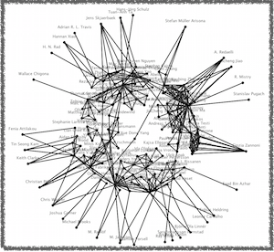
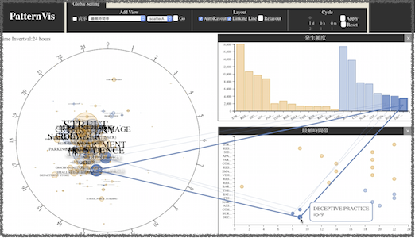

SHUHEI TAKEDA
筑波大学大学院 システム情報工学研究科
インタラクティブプログラミング研究室NAISチーム

ローカルな美的基準を考慮した
力指向におけるレイアウト制御方式
武田修平, 三末和男, 田中次郎
情報処理学会第76回大会, 2014年3月
時刻付きデータの探索的分析を支援する
視覚的分析ツールの開発
武田 修平, 蘇 紹華, 濱田 康平
三末 和男, 田中 二郎
162回HCI研究会, 2015年3月

takedas[a]iplab.cs.tsukuba.ac.jp
Tel : +81-29-853-5402